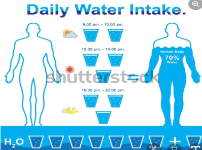

| Eat Healthy Foods
Eating healthy foods can bring a lot of benefits in our body system. It can supports our muscles, strengthens our bones, lowers the risk of heart diseases, it helps our digestive system function, boosts our immunity and above all it gives all the nutrition that our body needs to prevent from the risks brought about by the of Covid-19. |
| Good Sleeping Habits
During the time of pandemic our family ensure that we have a complete number of hours sleep. One of the factor or benefits of it is we were able to think more clearly and can do better in school and at work. We don’t get sick often and enough sleep supports a healthy immune system. One of the most important thing that we consider. |
| Regular Excersice
Another aspect that our family put into consideration is to have at least 20-30 minutes daily exercise. By doing this activity combined with eating healthy foods and having enough rest, really feels good. We felt that our body is being taken cared of and we all enjoy our exercises together dancing with our favorite tune.
|
|  | Adequate Water Intake
Drinking water helps to mitigate the negative effects of sugar that keeps our body healthy and ready to fight the virus. The water in our body washes away the excess toxins in the blood that ensures the flow of nutrients all over our body. We ensure to replace the liquid that were lost in our body after doing the regular exercises. |
| Hygiene and Sanitation Practices
Most of the time, we ensure that we regularly clean our body and do the sanitation to our surroundings for our own security and peace of mind. Keeping our hands clean is one of the most important ways to prevent the virus from spreading. This is how we promote good hygiene in the family most especially with the younger members. I do have toddler cousins and they always touches anything and not mindful about washing their own hands so we keep an eye for them to be healthy and safe during times like this. |